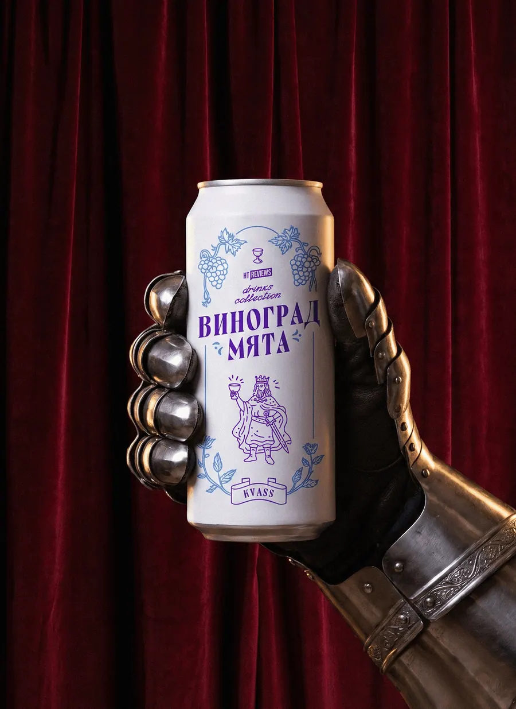
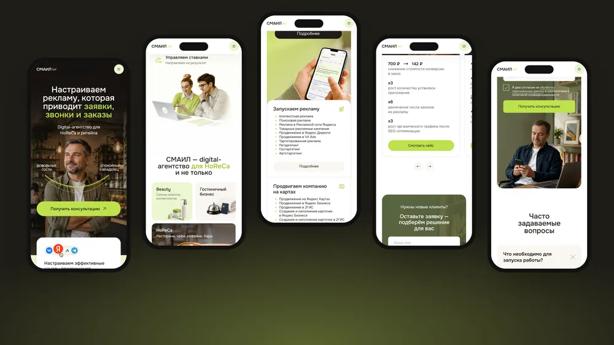
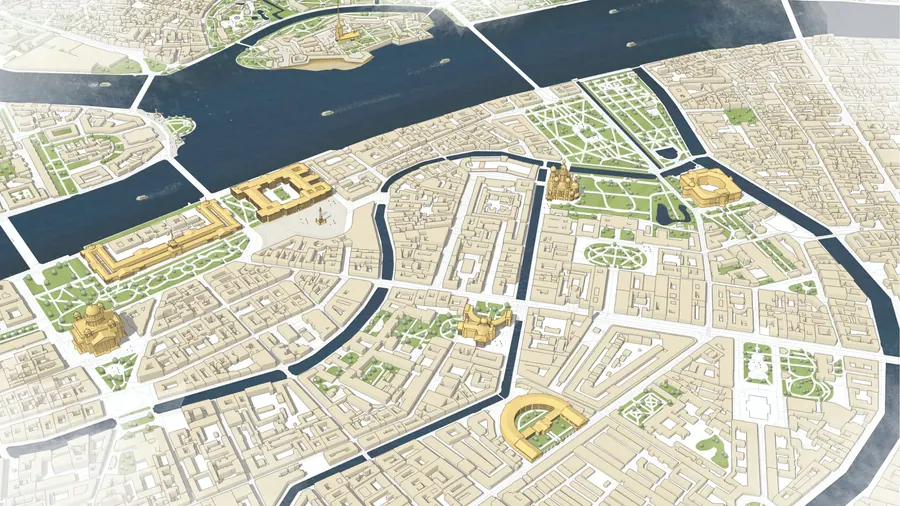

YUMA Back Office
Переработала карточку товара и отчёты. Собрала компоненты и правила для новых экранов.


Переработала карточку товара и отчёты. Собрала компоненты и правила для новых экранов.
Придумала упаковку для четырёх вкусов кваса и серию кадров с героями рыцарского турнира.

Разработала концепцию игровых карт и подготовила материалы к печати.


Спроектировала и собрала на Tilda сайт рекламного агентства.


Сделала планер, в котором храню курсы и вижу, какой урок смотреть дальше.


В YUMAPOS я работаю над инструментами для ресторанов. Сегодня это может быть форма для управляющего, завтра — страница о работе кухни.

В карточке товара собрала рядом поля, которые управляющий заполняет за один раз.
Для четырёх вкусов кваса придумала рыцарей. Сохраняла их лица от сцены к сцене, детали доводила в Photoshop.

Для «Ценного пути» готовила к печати поле, карты и правила. На столе они должны читаться вместе.
Интерфейсы, сайты на Tilda, айдентика, презентации и упаковка.
Цены и этапы